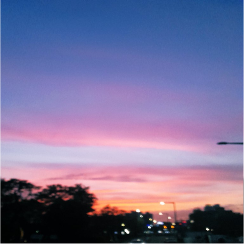

8barrelay
-JUNNY-
[Verse 1]
Won't you crawl up in this bed with me, (oh)
Cozy up in these sheets, girl
Tell 'em whatever you please (yeah, yeah)
[Pre-Chorus]
Look, ima keep this simple
If you could take this invitation
And just come over to mine
I'll let you decide
If you wanna, just say so
[Chorus]
Stay through the night, just me and you
해뜰때까지만, baby
곁에 있어줘 yeah (oh)
I just wanna get close to you
All I wanna do is take you to my place
0:00
0:35